Näiteks:
 + = 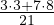 = 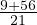 = 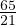 = 3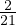.
+ = 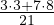 = 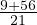 = 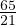 = 3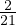.
Ühenimelistel murdudel on sama nimetaja ja erinimelistel murdudel on erinev
nimetaja. Harilike murdude liitmiseks (lahutamiseks) viime murrud eelnevalt
sarnasele kujule, muudame nad ühenimelisteks ning alles seejärel liidame (lahutame)
murru lugejad.
Kui mõlemad murrud on ühenimelised, siis saame kohe lugejaid liitma
asuda.
Näiteks:
Erinimeliste murdude korral on kõigepealt vaja leida ühine nimetaja, selleks valime
tavaliselt arvude vähima ühiskordse (VÜK).
Näiteks: + = 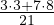 = 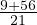 = 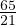 = 3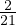.